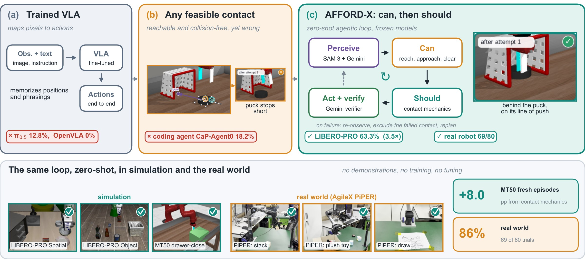
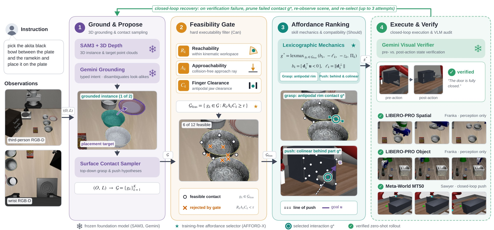
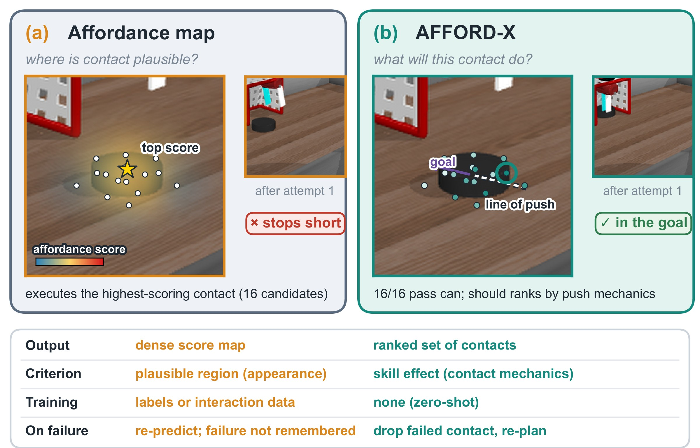
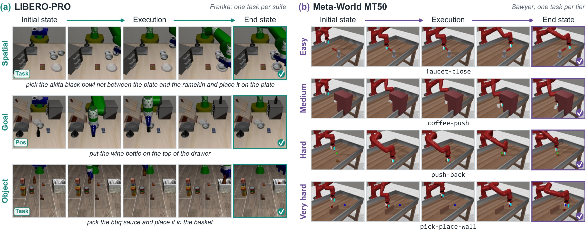
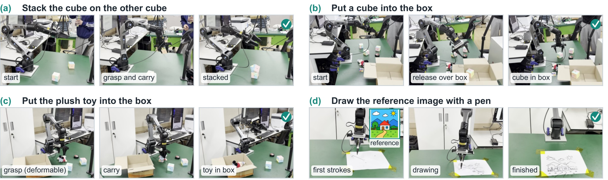
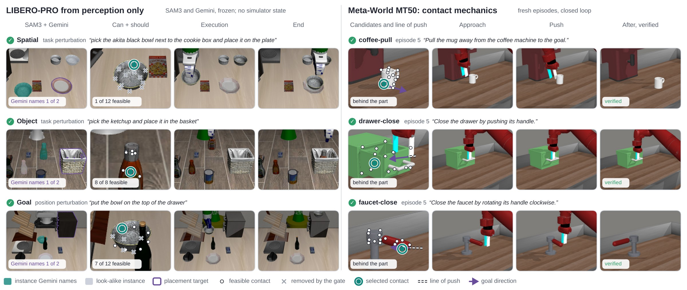

AFFORD-X
Affordance-Grounded Agentic Policy for Zero-Shot Robot Manipulation
Yeungnam University†Corresponding author

Perceive, can, should, act and verify


LIBERO-PRO, Pos and Task perturbations
From perception alone and on its first attempt, AFFORD-X reaches 63.3% mean success: 3.5× CaP-Agent0 (18.2%) and 4.9× the strongest fine-tuned VLA, π0.5 (12.8%).
| Method | Venue | Object | Goal | Spatial | Mean | |||
|---|---|---|---|---|---|---|---|---|
| Pos | Task | Pos | Task | Pos | Task | |||
| Trained VLAs, fine-tuned on LIBERO demonstrations | ||||||||
| OpenVLA | CoRL'24 | 0.0 | 0.0 | 0.0 | 0.0 | 0.0 | 0.0 | 0.0 |
| π0 | RSS'25 | 0.0 | 0.0 | 0.0 | 0.0 | 0.0 | 0.0 | 0.0 |
| π0.5 | CoRL'25 | 17.0 | 1.0 | 38.0 | 0.0 | 20.0 | 1.0 | 12.8 |
| UniVLA | RSS'25 | 0.0 | 0.0 | 10.0 | 0.0 | 10.0 | 0.0 | 3.3 |
| MolmoAct | ICRA'26 | 6.0 | 0.0 | 0.0 | 0.0 | 0.0 | 0.0 | 1.0 |
| X-VLA | ICLR'26 | 2.0 | 8.0 | 1.0 | 9.0 | 0.0 | 0.0 | 3.3 |
| SUREFlow | IROS'26 | 0.0 | 0.0 | 0.0 | 0.0 | 0.0 | 0.0 | 0.0 |
| Zero-shot: no demonstrations, no training | ||||||||
| CaP-Agent0 | ICML'26 | 22.0 | 18.0 | 26.0 | 17.0 | 12.0 | 14.0 | 18.2 |
| AFFORD-X | – | 76.7 | 70.0 | 45.0 | 33.3 | 80.0 | 75.0 | 63.3 |
| AFFORD-X, privileged geometry | – | 100.0 | 100.0 | 53.3 | 50.0 | 91.7 | 76.7 | 78.6 |
Success (%). VLA numbers are from the official LIBERO-PRO leaderboard and SUREFlow, CaP-Agent0's from CaP-X, all over every initial state. Mean over the six cells every method reports; 95% interval for AFFORD-X [53.6, 72.8]. Gray: privileged geometry, an upper bound on what better perception could add.

Meta-World MT50
The contact-mechanics key raises first-attempt success from 46.7% to 54.7%; with verification and replanning the loop reaches 58.0%, without a single demonstration.
| Method | Venue | Easy (28) | Med. (11) | Hard (6) | V.hard (5) | Mean | All (150) | Loop (150) |
|---|---|---|---|---|---|---|---|---|
| Trained on demonstrations | ||||||||
| Diffusion Policy | RSS'23 | 83.6 | 31.1 | 9.0 | 26.6 | 37.6 | – | – |
| TinyVLA | RA-L'25 | 77.6 | 21.5 | 11.4 | 15.8 | 31.6 | – | – |
| DP3 | RSS'24 | 90.9 | 61.6 | 31.7 | 49.0 | 58.3 | – | – |
| Mamba Policy | IROS'25 | 95.4 | 92.2 | 48.3 | 71.2 | 76.8 | – | – |
| SUREFlow | IROS'26 | 97.8 | 93.5 | 86.1 | 75.9 | 88.3 | – | – |
| Zero-shot, identical candidates | ||||||||
| Random choice | – | 48.8 | 15.2 | 16.7 | 13.3 | 23.5 | 34.0 | – |
| Stability ranking | – | 58.3 | 33.3 | 33.3 | 46.7 | 42.9 | 48.7 | – |
| AFFORD-X w/o mechanics | – | 56.0 | 30.3 | 33.3 | 46.7 | 41.6 | 46.7 | 50.7 |
| AFFORD-X | – | 63.1 | 42.4 | 44.4 | 46.7 | 49.2 | 54.7 | 58.0 |
| Best-candidate ceiling | – | 82.1 | 93.9 | 77.8 | 86.7 | 85.1 | 84.7 | – |
Success (%) by difficulty tier (tasks in parentheses); Mean is over tiers. Trained policies as reported in SUREFlow, under their own protocols. Zero-shot rows rank identical candidates on 150 scenes; All pools them and Loop allows up to three verified attempts in the 500-step episode. Bold marks the best zero-shot result; trained per-task policies such as Mamba Policy and SUREFlow remain ahead.
The same loop on an AgileX PiPER
With no demonstration collected for any task, the loop succeeds in 69 of 80 trials (86.3%). The perception interface, decision rule and verifier prompt are reused unchanged from simulation.
20 trials per task, up to three attempts per trial; a 6-DoF arm with a parallel-jaw gripper and a fixed external RealSense RGB-D camera.

Where should the VLM sit?
Grounding the VLM in the affordance shortlist adds 4.5 points, but once the layer orders the contacts the VLM adds nothing. AFFORD-X uses the VLM to perceive and verify, and keeps it out of the contact choice.
| Who chooses the contact | LIBERO-PRO | MT50 | All |
|---|---|---|---|
| VLM, directly from all candidates | 82.8 | 45.3 | 71.8 |
| VLM, within the affordance shortlist | 88.1 | 48.0 | 76.3 |
| Affordance layer, no VLM in the choice | 90.3 | 42.7 | 76.3 |
First-attempt success (%) on 510 scenes with identical candidates, one VLM sample and RGB input. Shortlist − direct: +4.5 [+1.2, +8.4]. Affordance layer − shortlist: 0.0 [−3.1, +3.0].

Recovering from a failed attempt
Logged episodes in which the verifier rejected an attempt, AFFORD-X re-observed, excluded the tried contact and the replanned attempt was verified. Each video replays the logged episode.
Interactive 3D views
Supplementary views built from logged runs.
BibTeX
@misc{sarowar2027affordx,
title = {AFFORD-X: Affordance-Grounded Agentic Policy for Zero-Shot Robot Manipulation},
author = {Md Selim Sarowar and Sungho Kim},
year = {2027},
note = {In preparation},
url = {https://physical-super-intelligence.github.io/AFFORD-X/}
}